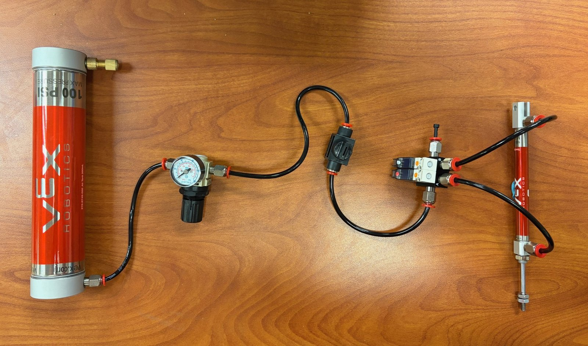
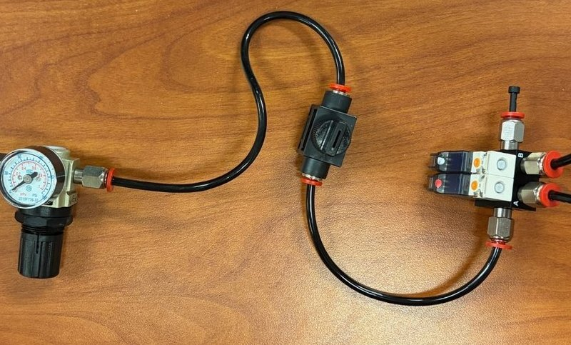

Today we learn a small set of symbols, draw the VEX circuit with them, and run an industrial circuit in a simulator.
Drawing real pictures of every valve in a factory would take forever. Engineers use symbols instead, set by the International Organization for Standardization (ISO), so a schematic reads the same anywhere in the world. A symbol shows a part’s function, not what it looks like.
Circles are machines that convert energy, and the triangle shows which way the energy flows.
After the compressor, a few more symbols get the air ready to use and let it go when the job is done.
A cylinder symbol is a rectangle with a line for the piston and a line for the rod. Ports are drawn where the air gets in.
Each box is one position. Two boxes means two positions. Arrows show where air flows, and a T marks a blocked port.
The ports attach to the box for the resting position, usually the right box. Here, 1 is supply, 2 and 4 go to the cylinder, and 3 and 5 are exhausts.
What moves the valve is drawn on the ends:
You met the 3/2 valve in the push-button explorer. Its ports attach to the right box: 1 is supply, 2 goes out to the part it feeds, and 3 is the exhaust.
In the right box, 1 is blocked and 2 vents through 3. In the left box, 1 feeds 2 and 3 is blocked.
A lever, drawn as a line with a small circle, means a person sets the valve by hand. With no spring, it stays where it is left, which is just what a shut-off valve needs.
Connect the symbols in the order the air travels, and you have a pneumatic circuit. Schematics are drawn from the bottom up: the air supply at the bottom, the valves in the middle, and the parts that move, like cylinders, at the top.

This is the VEX circuit you know: tank, regulator, solenoid valve and cylinder.
It has one extra part on the supply line, between the regulator and the solenoid valve.

The shut-off valve sits on the supply line between the regulator and the solenoid valve. An arrow on its body shows which way the air must flow through it.
It works like a lever: turn the dial in line with the tube to open it, and across the tube to close it. In the photo it is open.
Close it before you touch any tube or fitting, and before you reach into a machine.
In a schematic, the shut-off valve is a 3/2 valve with a lever. One box passes air from 1 to 2; the other blocks 1 and opens 2 to the exhaust.
Closing it stops the supply and vents the air already downstream, so the solenoid valve and cylinder are safe to work on.
The regulator and the tank stay charged. Empty the tank before the kit is stored or taken apart.
The shut-off valve sits between the regulator and the solenoid. The VEX solenoid is drawn by its function: a 5/2 valve with a coil on each end, A to the rod end and B to the cap end.
The drawing leaves out the plugged spare P port, the shared R passage inside the body, tube lengths and fittings. A schematic shows how the air flows, not where the parts sit.
1. In a VEX schematic, the line from valve port A runs to the cap end, and port B runs to the rod end. The build sheet says A should feed the rod end. When the signal is low and air goes to A, what does the cylinder do?
2. A 5/2 valve symbol has a solenoid on its left end and a spring on its right end. With the solenoid off, which box shows how the valve is connected?
An electro-pneumatic circuit has two sections: one for the electricity and one for the pneumatics that it controls. A small, safe 24 V signal decides when the valve shifts, and the valve handles the air.
The power rails run down each side. S1 is a normally open switch: no current flows until it closes.
When S1 closes, current flows through coil Y1, the solenoid on the valve. Matching labels tell the technician how the electrical and pneumatic sections correspond.
Let’s see how an electro-pneumatic circuit works with a simulation. Here’s the scenario: an industrial press uses this circuit to push parts into place. Air costs money to compress, so the shop wants to run it at the lowest pressure that still does the job.
| Trial | Pressure | Load | Extending |
|---|
1. In a pneumatic schematic, a circle with a hollow triangle at the top, pointing out of the circle, stands for which part?
2. What was the lowest pressure that pushed 150 lb, and the lowest that pushed 250 lb? Explain the difference using force = pressure × area.
3. Name one way the VEX and industrial schematics look different, and one way they work the same.